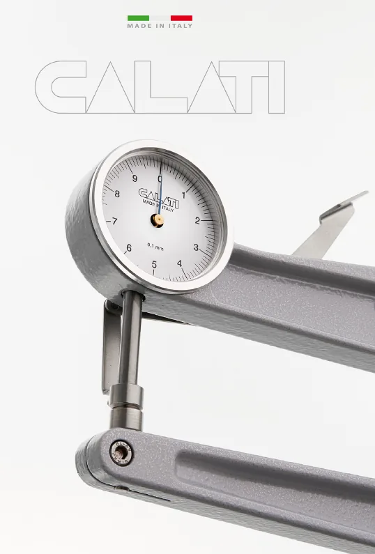
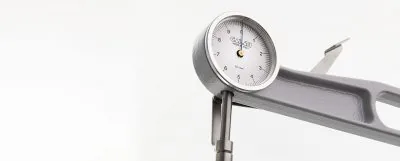
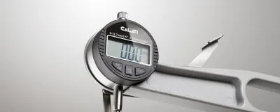
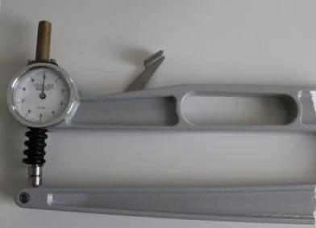
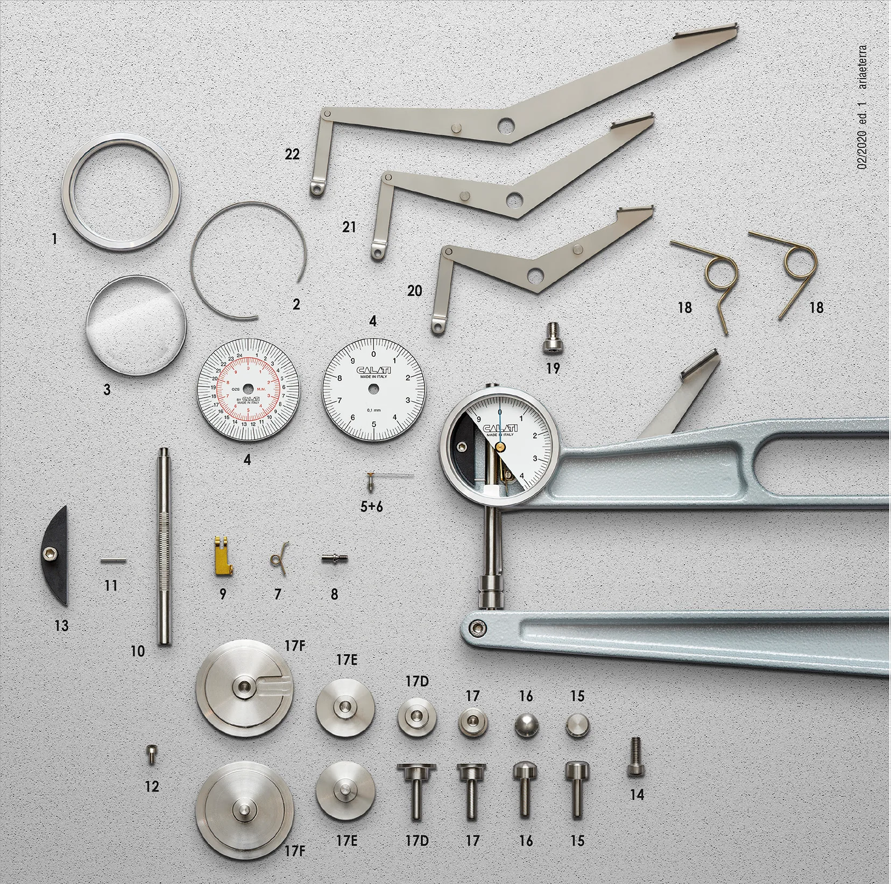

Professional thickness gauges for the tannery industry. PCT Lime Protection, dual oz/mm readout, and extreme durability for the harshest production environments.

The new PCT coating protects the gauge from lime, chemicals and the aggressive conditions of wet-blue and tripe environments. No other analogue thickness gauge offers this level of resistance.
Simultaneous readout in ounces (OZS) and millimetres (M.M.) on a single analogue dial. Ideal for tanneries operating on international markets with no need for recalibration.
The new WiFi model transmits every measurement directly to a PC up to 100 m away. Resolution 0.01 mm, digital display with mm/OZ unit selection, painted aluminium body.
Calati thickness gauges cover the full measurement range required in leather, textile and rubber manufacturing — from the world-renowned analog models, trusted for decades for their reliability and durability, to high-precision digital versions for quality control and lab use. The range includes instruments built for demanding production environments: special protection models to withstand moisture, dirt and chemical exposure — standard conditions in tannery wet operations and rubber processing. For international markets and cross-specification workflows, selected models are available with a dual OZ/MM scale. All Calati gauges are made in Italy, designed specifically for the technical requirements of the tannery, textile and rubber industries.



We stock a full range of original Calati spare parts and accessories — contacts, dial faces, springs, measuring tips and more. Whatever you need, we can get it fast.

Calati thickness gauges measure the thickness of leather, fabric and rubber materials. Available in analog and digital versions, with measurement ranges suited for both thin materials (finished leather, textile) and thick ones (sole leather, industrial rubber).
Analog Calati models are mechanical instruments built for intensive production environments — robust, reliable, no battery dependency. Digital models provide instant numeric readout and higher precision, ideal for lab-grade quality control and documentation.
Special protection Calati gauges have special mounting protections designed to resist water, chemical agents and dirt accumulation — typical conditions in tannery wet-end processes and rubber manufacturing lines. Standard gauges are not designed for prolonged exposure to these environments.
Yes. Selected Calati models feature a dual OZ/MM scale, designed for tanneries and buyers working with Anglo-American market specifications or managing technical requirements in ounces alongside metric measurements.
Tell us which model you are interested in and our team will get back to you with pricing and technical details.